採掘
このページについて
鉱石や木をまとめて壊す MineAll と CutAll、石と土のように、掘ったり切ったりするときにバニラと違うところをまとめました。
MineAll
つるはしで鉱石を 1 個掘ると、それにつながった同じ鉱石をまとめて掘ります。斜めにつながったものも含めて、最初の 1 個を入れて最大 128 個までです。
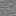
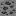
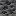
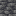
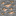
- 印の付いた石炭鉱石を掘ると、つながった石炭鉱石と深層岩石炭鉱石がまとめて壊れます。鉄鉱石は種類が違うので残ります。
- 同じ鉱石の石の層のものと深層岩の層のものは、同じ種類として扱います。古代の残骸もまとめて掘れます。
- その鉱石を掘れるつるはしのときだけ働きます（鉄のつるはしで古代の残骸は掘れません）。石・原石のブロック・石炭ブロックは鉱石ではないので、まとめて掘りません。
- ドロップと経験値は、最初に掘った鉱石の場所にまとめて出ます。幸運やシルクタッチは、すべての鉱石に効きます。
- つるはしの耐久値と満腹度は、最初の 1 個を掘った分しか減りません。最初の 1 個でつるはしが壊れても、残りは掘れます。
- M でオンとオフを切り替えます。最初はオンで、選んだ状態は次に遊ぶときも続きます。今どちらかは HUD に出ます。
- サバイバルとアドベンチャーのときだけ、ブロックを壊してよい場所でだけ働きます。
CutAll
斧か素手で木の原木を 1 個切ると、木を 1 本まるごと切り倒します。つながった同じ種類の原木を、切ったところより上も下も、斜めにつながったものも含めて最大 256 個、それがなくなると枯れる葉を最大 2048 個まで壊します。
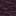
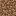
- 自然に生えた葉に触れている原木だけを切り倒します。原木で建てた家の壁や、置いた葉しか付いていない幹は、いつもどおり 1 個ずつ壊れます。
- となりの木がまだ支えている葉は残ります。
- ドロップは、切った場所にまとめて出ます。苗木やリンゴも一緒に出ます。
- 斧の耐久値と満腹度は、切った 1 個の分しか減りません。素手なら減るのは満腹度だけです。
- 拾った原木・苗木・棒やブロックのように、道具でなく耐久値もない物を手に持っているときは、素手と同じに切り倒します。斧以外の道具や、弓のように耐久値のある物を持っているときは、切った 1 個だけが壊れます。
- C でオンとオフを切り替えます。最初はオンで、選んだ状態は次に遊ぶときも続きます。今どちらかは HUD に出ます。
- サバイバルとアドベンチャーのときだけ働きます。クリエイティブでは C はホットバーの保存のキーなので、切り替わりません。
石と土
つるはしで掘った 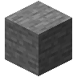 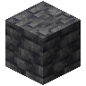
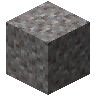
砂利 は、幸運があってもなくても、いつも砂利 1 個と 火打石 1 個になります。まな板で掘っても両方取れます。シルクタッチなら砂利だけです。- 石と深層岩でも、丸石と同じように石の道具を作り、金床で直せます。拾うと実績「石器時代」も取れます。
- 地下の石の中には、砂利や土の塊が出なくなりました。洞窟でも山の中でも同じです。川・湖・海の底の砂利と粘土は、バニラのままです。
ワールドの生成が変わるのは、これから新しく生成されるチャンクだけです。すでに行ったことのある場所は、前のまま変わりません。
石と砂利のレシピ
作業台でもインベントリの 2×2 でも作れます。石 1 個からは石のボタンも作れるので、出力の選択で選べます（選ぶまでは丸石になります）。
石の塀と深層岩の塀（3×2 なので作業台だけ）はこの MOD のブロックで、見た目はバニラの石・深層岩と同じです。丸石の塀・深層岩の丸石の塀は、バニラと同じく丸石・深層岩の丸石から作ります。
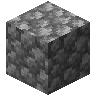
形は自由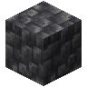
形は自由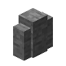
6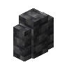
6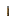
石切台でも、石 1 個から石の塀を、深層岩 1 個から深層岩の塀を 1 個作れます。
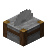
花崗岩・閃緑岩・安山岩・凝灰岩
これらの岩も、地下に塊で出なくなりました。代わりに石切台で、石 1 個から花崗岩・閃緑岩・安山岩を、深層岩 1 個から凝灰岩を、それぞれ 1 個作れます。岩から石・深層岩へは戻せません。バニラの作業台のレシピ（丸石とネザークォーツから閃緑岩など）も、そのまま使えます。
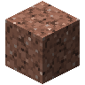
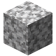
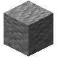
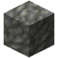